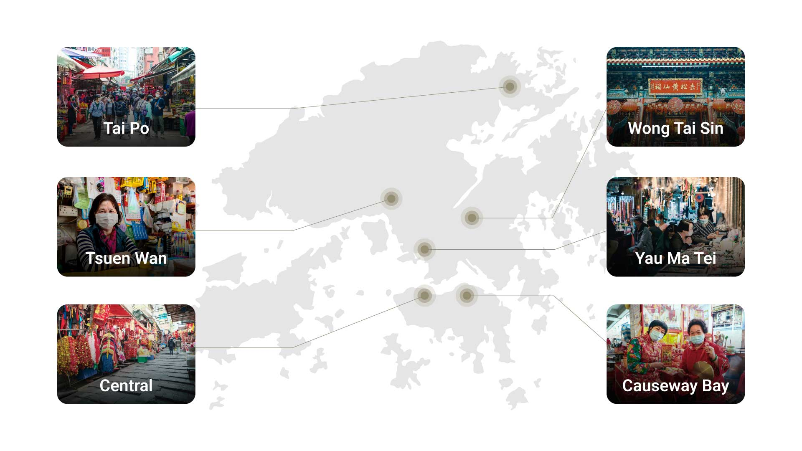
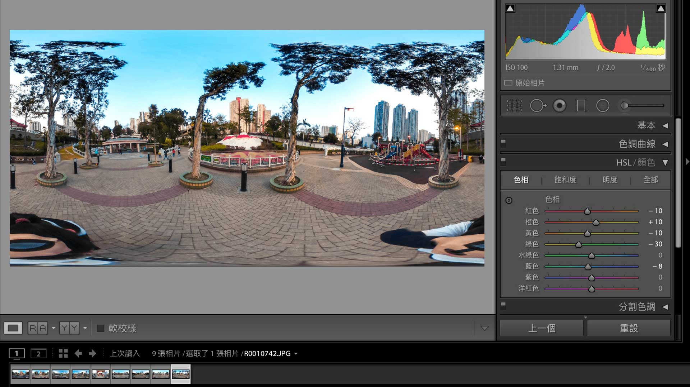

Urban Watcher
An immersive and interactive VR installation that encourages viewers to re-examine transient, everyday local environments in Hong Kong that may unexpectedly disappear.

Overview
Designed as an immersive, first-person experience, this interactive artwork encourages audiences to reconsider familiar surroundings that are at risk of disappearing. The project unfolds across sites selected for their unique character, historical significance, and emotional resonance within the community.
By transforming viewers into active participants, the piece emphasizes the importance of recognizing and valuing the transient aspects of our physical world.
Focus
The work sits at the intersection of documentary photography, spatial sound, and interactive VR — turning passive observation into presence.
Immersion
Move beyond tablet screens into a first-person spatial experience that feels inhabited, not watched.
Place & memory
Document local environments that may vanish — and give them a lasting, shareable form.
Sound as place
Pair 360 imagery with spatial audio so locations feel alive, not static panoramas.
Participation
Invite viewers to navigate, linger, and choose — making them co-authors of the encounter.
Artist Statement
When I first became absorbed in photography, Hong Kong’s landscapes deeply impressed me. At that time, I had little interest in the cityscape itself. Influenced by many different factors, I began shooting between buildings, along streets and alleys, and through residential estates—trying to capture the city’s rhythm. Slowly, I realized there is so much in Hong Kong worth preserving on camera. No matter people’s routines or daily behaviors, the city always carries vitality and spirit. To me, these are the beauty elements that come together within the urban environment.
Living in a fast-paced life shaped by technology, we often overlook the unique human touch. During the social movements and the pandemic, many of our lives were disrupted, and most people were forced to stay in Hong Kong. At the same time, we began to rediscover the city’s history and beauty. This inspired me to create an artwork connected to the Hong Kong I grew up with.
To capture the most authentic scenes, this artwork focuses on the moment as something experienced through imagery, sound, and space. Designed as immersive and interactive art, it invites the audience to become participants—exploring from a first-person perspective. The location I chose is based on the place’s characteristics, local landmarks, historical architecture, and shared collective memories. Now it’s your turn to observe, reflect, and let the work spark feelings and responses.
Inspiration
Artists working at the intersection of image, sound, and place — practices that informed the direction of this work.
Mario Cipriano
Mario Cipriano, an Italian photographer, created “Light Sound Light” using four short videos that combine images with shutter sounds. He records location audio with a microphone before shooting on his Leica M6. Black frames play five seconds of audio; photos follow with more sound, each lasting ten seconds.

Stuart Fowkes
Stuart Fowkes collaborated with sound artists to collect images from over 75 countries through 500 contributors. He organizes them in a database, and sound designers select images to form a soundtrack. The result is a sound map blending media, prompting reflection on memory, consciousness, and storytelling.
CENG Industrial Day
This virtual tour, created by City University of Hong Kong for Industrial Day 2020, introduces the facility and its projects. It includes Zoom chat, a promotional video, and an information window for newcomers. Built with 3DVista VT Pro, it offers useful reference despite lacking background music.

Field research
The field trip evaluated site feasibility. Locations were subject to adjustment based on assessment, and the final schedule superseded the initial itinerary. Sites were chosen for character, historical weight, and emotional resonance within the community.

Advisor sessions
Three meetings with advisor Adam Tam shaped the direction of the work. His feedback pushed deeper imagery and sound research, documented in detailed notes.
A key breakthrough came in the second session, focused on technical design: rather than leaving the audience as passive viewers on tablets, we explored building a truly immersive experience through virtual reality concepts.
Production
Key equipment was secured through the school: a RICOH THETA S camera, a Zoom H3-VR audio recorder, and a 3DVista Virtual Tour software license.
Images were retouched and audio noise reduction applied. Processed media was then imported into the software to assemble the virtual tour.


Capture
- 360° stills on site
- Spatial audio recording
- Location notes & references
Craft
- Image retouching
- Audio noise reduction
- Media sync & sequencing
Build
- 3DVista tour assembly
- Hotspots & navigation
- Exhibit packaging
Outcome
Showcased on a tablet at the SCM exhibit, the project came to life alongside free collectible postcards for attendees — extending the experience beyond the screen.